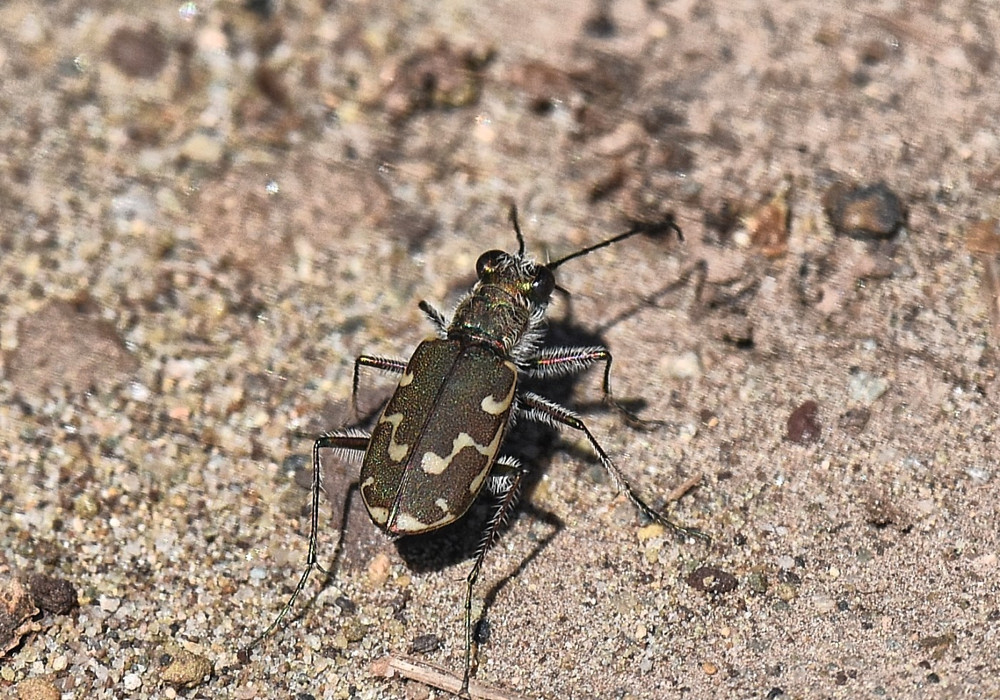
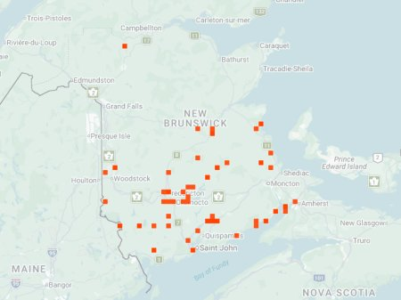

Bronzed Tiger Beetle (photo: your name / date or iNaturalist observer)

Distribution map (based on iNaturalist observations)
Identification
- Medium-sized (11–14 mm), coppery-bronze with variable white maculations (often 3 on each elytron).
- Legs and antennae dark; body shiny metallic.
- Very fast runner along water edges; short flights when disturbed.
- Distinguish from Twelve-spotted by fewer spots and more coppery color.
Habitat in New Brunswick
Common on sandy or gravelly riverbanks, lake shores, and sandbars. Prefers open, moist areas near water; widespread across NB.
Flight Season in NB
April to October (spring-fall; bimodal peaks May-June and August-September). One of the most frequently seen species.
Distribution & Notes
Very widespread and abundant in New Brunswick, especially along rivers and coastal areas. Excellent indicator of sandy riparian habitats. No conservation concerns.